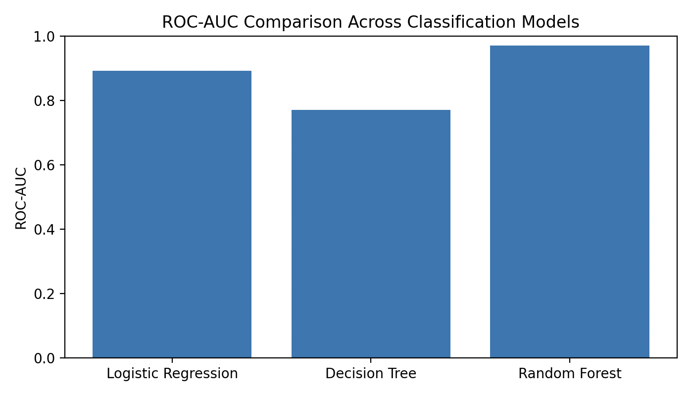
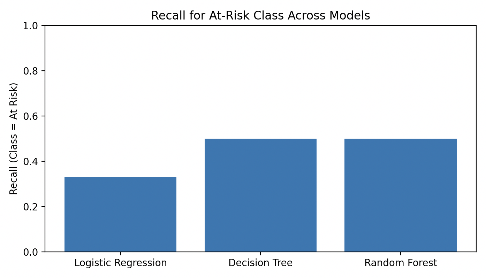
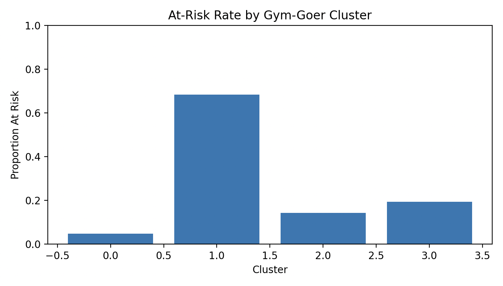
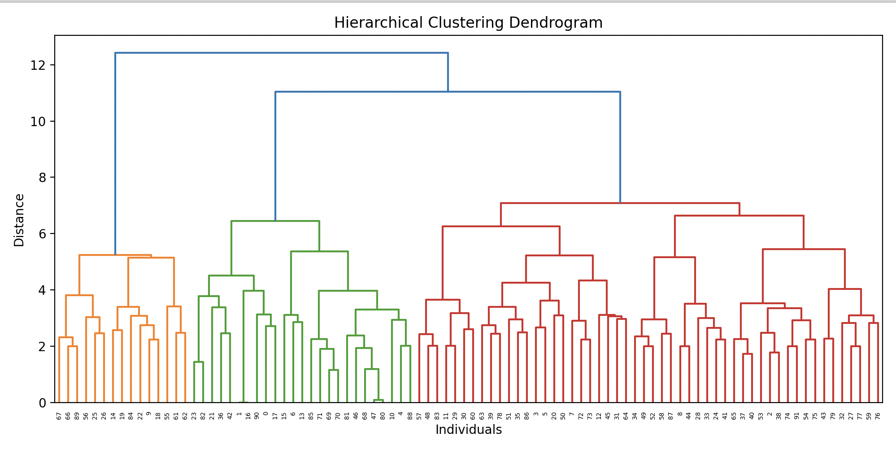

By Joseph Zou · Updated Summer 2025
The gym has always been more than just a place to train for me. It is where I build discipline, chase progress, and feel a sense of control over my body. At the same time, it is where my struggles with body dysmorphia have often been the loudest. Growing up around fitness content on social media, I internalized a narrow image of what progress was supposed to look like. Even when I was getting stronger or more athletic, it was difficult to shake the feeling that I was falling short of an invisible standard.
Over time, I began to notice that these feelings were not unique to me. Conversations in the gym, online forums, and casual comments from friends all pointed to the same tension. The gym is a place of confidence and empowerment, but it can also amplify comparison, self criticism, and unrealistic expectations. I wanted to understand how widespread these experiences were and whether patterns in gym behavior and media exposure could help explain who is most at risk.
This project started as a personal attempt to make sense of those questions through data. I designed and deployed a survey focused on gym habits, social media usage, and body image perceptions, collecting responses from over 90 participants. What began as exploratory analysis has since evolved into a full machine learning study combining supervised classification and unsupervised clustering to better understand body dissatisfaction risk.
To move beyond anecdotal insight, I first needed a concrete definition of what it means to be at risk for body dissatisfaction. Using survey responses, I defined an at risk threshold based on a composite body satisfaction score. Participants below this threshold consistently reported lower confidence and higher dissatisfaction with their physique.
Applying this threshold revealed a clear imbalance. Approximately one quarter of respondents fell into the at risk group, with an average body satisfaction score less than one third of the non at risk population. This binary framing allowed me to apply supervised learning models while preserving the underlying personal context behind each response.
I trained multiple classification models to predict whether an individual was at risk for body dissatisfaction based on behavioral and demographic survey features. The goal was not simply accuracy, but the ability to identify at risk individuals reliably, even at the cost of some false positives.
A logistic regression model served as a baseline and achieved a ROC AUC of 0.89. While overall accuracy was reasonable, recall for the at risk class was limited, indicating difficulty capturing more subtle cases of dissatisfaction.
Tree based models improved performance. A decision tree increased recall for the at risk class, while a random forest achieved the strongest overall performance with a ROC AUC of 0.97 and perfect precision on the at risk group. These results suggest that non linear interactions between gym habits, media exposure, and self perception play a meaningful role in body image outcomes.


While supervised models help predict risk, they do not explain the broader structure of gym culture. To address this, I applied K means clustering and hierarchical clustering to identify natural groupings of gym goers based on behavior and attitudes.
Both methods consistently revealed four distinct clusters. One cluster stood out sharply, with nearly 70 percent of individuals classified as at risk. In contrast, another cluster exhibited almost no risk, suggesting that certain combinations of habits and mindset may be protective rather than harmful.


The same gym environment can be empowering for some and deeply harmful for others, depending on how habits, expectations, and self perception interact.
This project reinforced that body dysmorphia is not simply an individual struggle. It is shaped by patterns of behavior, social reinforcement, and cultural norms that can be measured and analyzed. At the same time, the data never felt abstract. Each point represented a real person navigating the same contradictions I have felt in my own training.
Combining machine learning with a topic this personal taught me how quantitative tools can surface patterns without erasing human context. The gym will likely always be a place where confidence and insecurity coexist for me. This project helped me understand why that tension exists and why it affects people so differently.